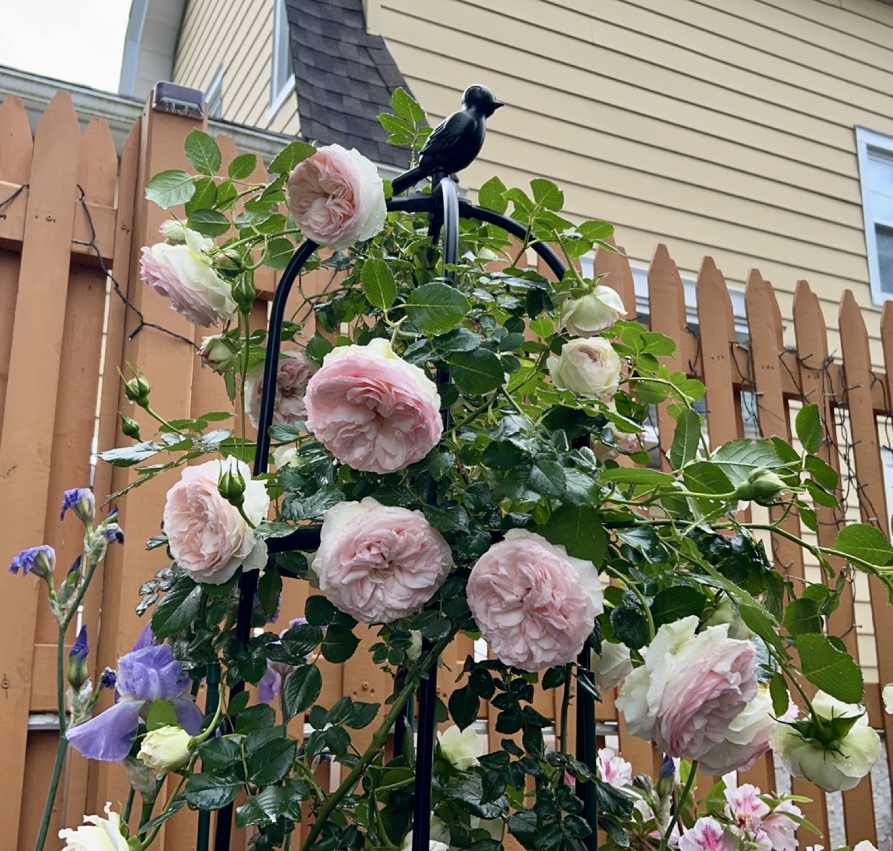
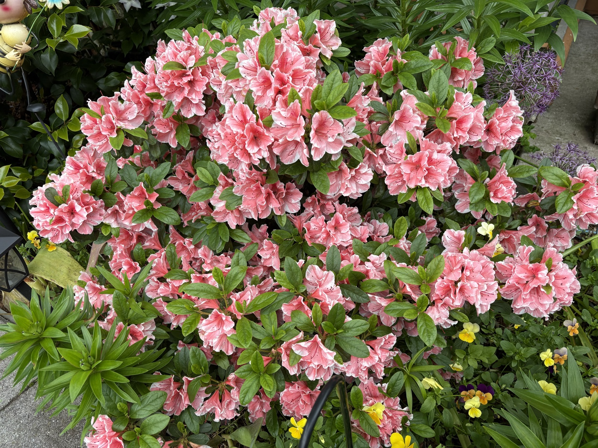
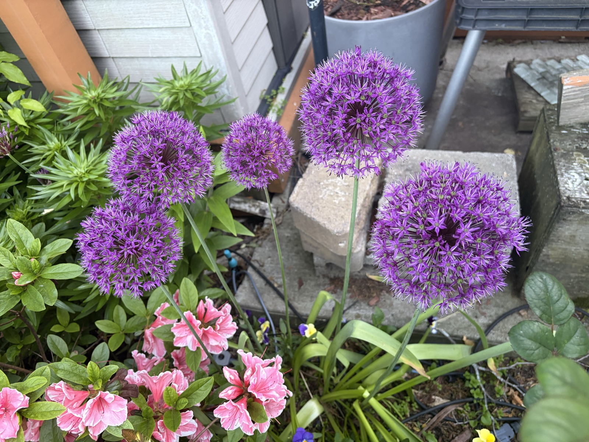

June Belongs to the Roses
Every year I forget how fast it happens. One week the climbing rose is a green skeleton on its obelisk, and the next it has swallowed the whole structure — the little cast-iron bird on top is the only clue there's a trellis under there at all.

The blooms open blush-white and deepen to a soft shell pink in the center, packed with petals like a proper old rose. After rain they hang heavy and nod at everyone who walks by. I counted forty-two open flowers on one morning and then stopped counting.

This apricot one is the rose I'd save in a fire. The buds come on dark coral, almost red, and you'd never guess they open into these enormous soft-apricot cups that smell like tea and honey. It sits by the back steps so I get a face full of fragrance every time I take out the recycling. Strategic planting.

And then there's the striped character. I almost shovel-pruned it two years ago when it sulked through a whole summer, but look at it now — cream splashed with raspberry, every bloom patterned differently, like somebody flicked a paintbrush at it. Lesson learned: some roses just need a year to think about it.

Supervising all of this: the alliums, five perfect purple spheres floating over the bed like lollipops. They bridge the awkward gap between tulip season and rose season, the deer and squirrels won't touch them, and they dry into sculptural globes I refuse to cut down until August.
June chores, for future me: deadhead every few days, keep the water going deep at the roots (not on the leaves — the striped one gets blackspot if you look at it wrong), and feed everyone again after this first flush finishes.